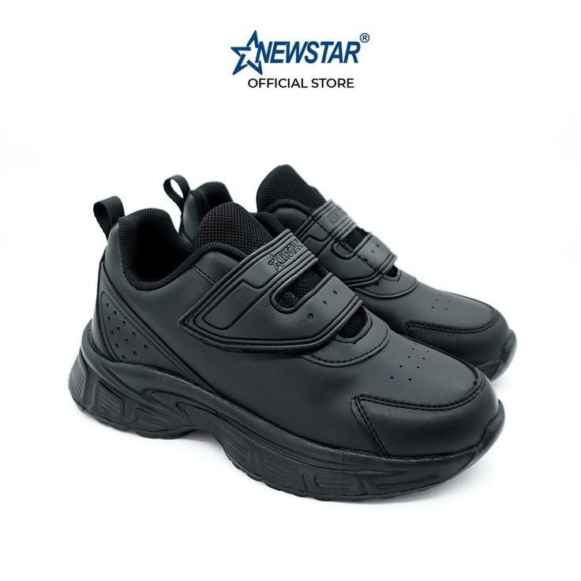
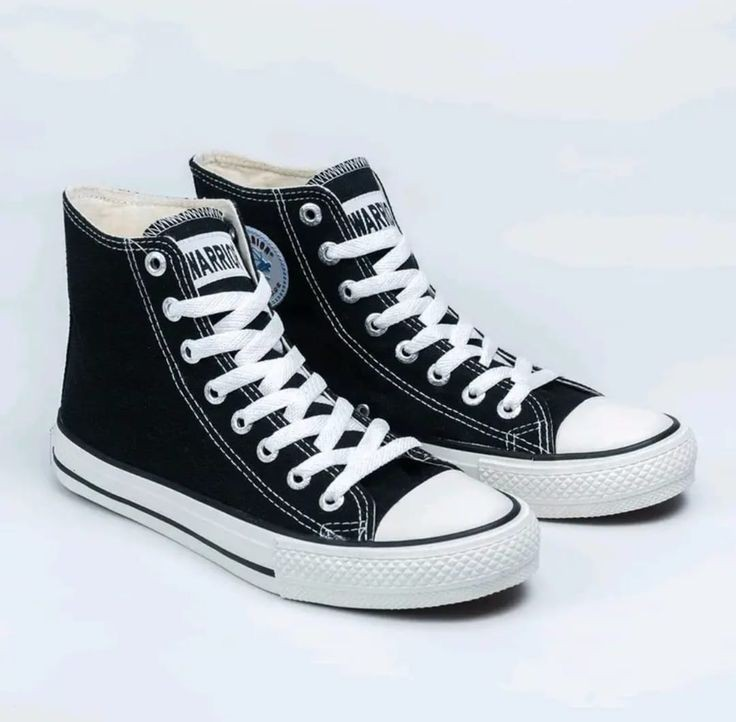
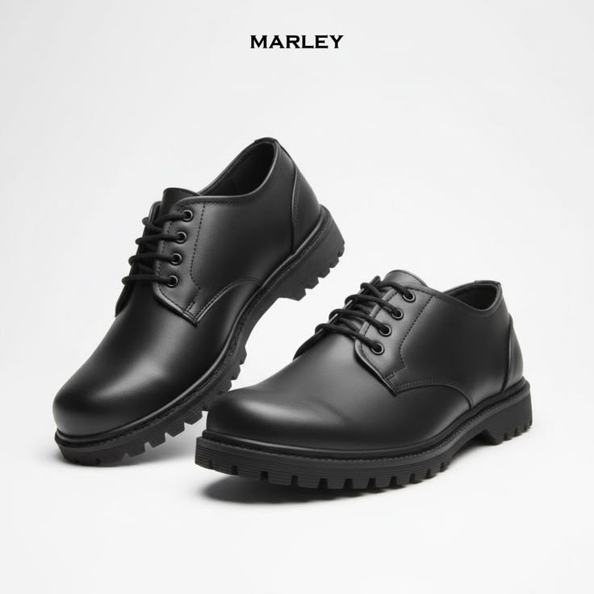
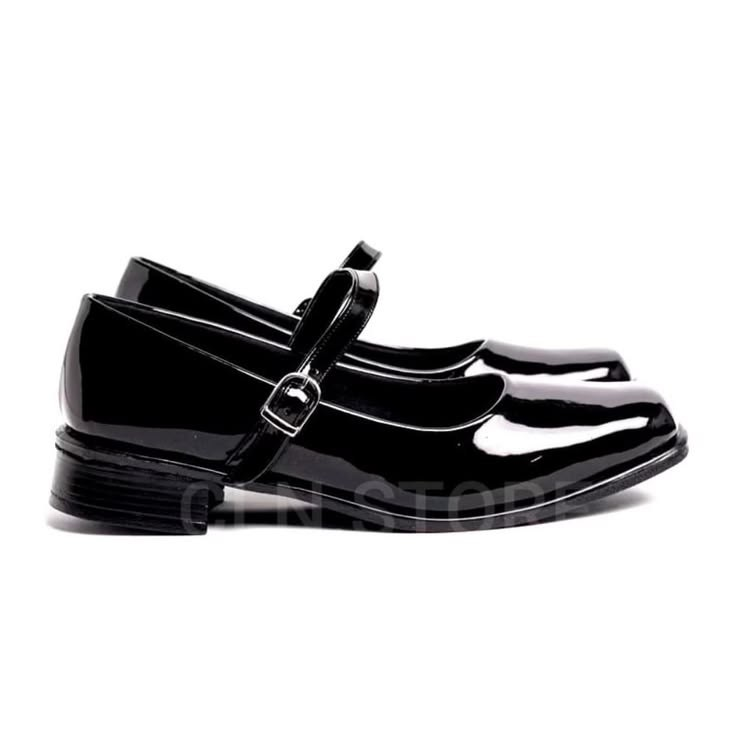

SEPATU
Sepatu Sekolah
Model sederhana dan cocok digunakan untuk kegiatan sekolah.
SCHOOL SHOES

Model sederhana dan cocok digunakan untuk kegiatan sekolah.

Pilihan sepatu dengan desain praktis untuk pelajar.

Cocok dipadukan dengan berbagai jenis seragam sekolah.

Model klasik untuk tampilan sekolah yang rapi.